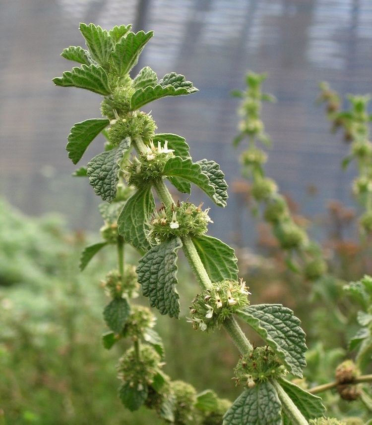

Ayuntamiento de Senés
JARDIN BOTANICO DE ESPECIES AUTOCTONAS DE SENES

Marrubium vulgare

El marrubio (Marrubium vulgare) es una planta herbácea perenne característica de zonas secas y soleadas del clima mediterráneo. Presenta tallos erectos y ramificados, cubiertos por una densa vellosidad que le da un aspecto blanquecino.
Sus hojas son ovaladas, rugosas y de color verde grisáceo, mientras que sus pequeñas flores blancas se agrupan en verticilos alrededor del tallo. Es una especie muy resistente y adaptada a suelos pobres.
El marrubio se distribuye por regiones mediterráneas y zonas templadas, creciendo en terrenos secos, bordes de caminos y suelos alterados.
Es común en áreas rurales, formando parte de la vegetación espontánea en ambientes soleados.
El marrubio ha sido utilizado tradicionalmente por sus propiedades medicinales, especialmente como expectorante y digestivo.
Se emplea en infusiones para aliviar afecciones respiratorias y mejorar la digestión.
Se asocia con la protección y la salud, debido a su uso en la medicina tradicional.
También representa la resistencia de las plantas humildes del entorno rural.
En Senés, el marrubio ha sido conocido como planta medicinal utilizada en remedios caseros.
Especialmente en infusiones para tratar resfriados y problemas digestivos.
Florece principalmente entre primavera y verano.
Sus flores blancas aparecen en grupos alrededor del tallo.
Su sabor amargo ha hecho que se utilice en preparados tradicionales.
Es una planta muy apreciada en la medicina popular desde la antigüedad.